Subgraph
Every edge must be connected to its vertices, but not every vertex must be connected.
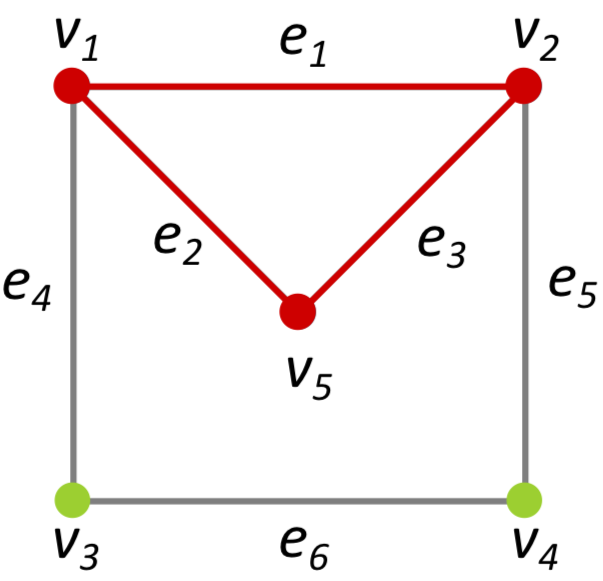
Simple graph
No loops (e={u,v}, u=v).
No parallel edges.
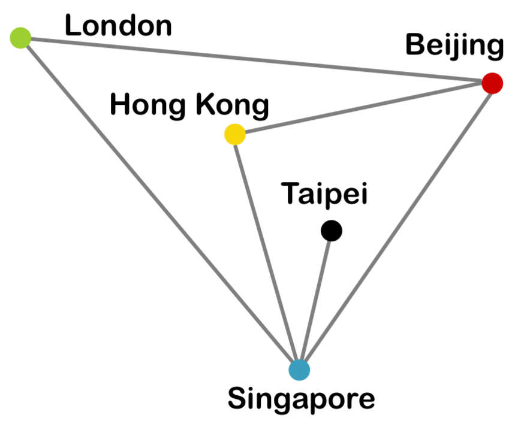
Multigraph
No loops.
At least two parallel edges between some pair of vertices.
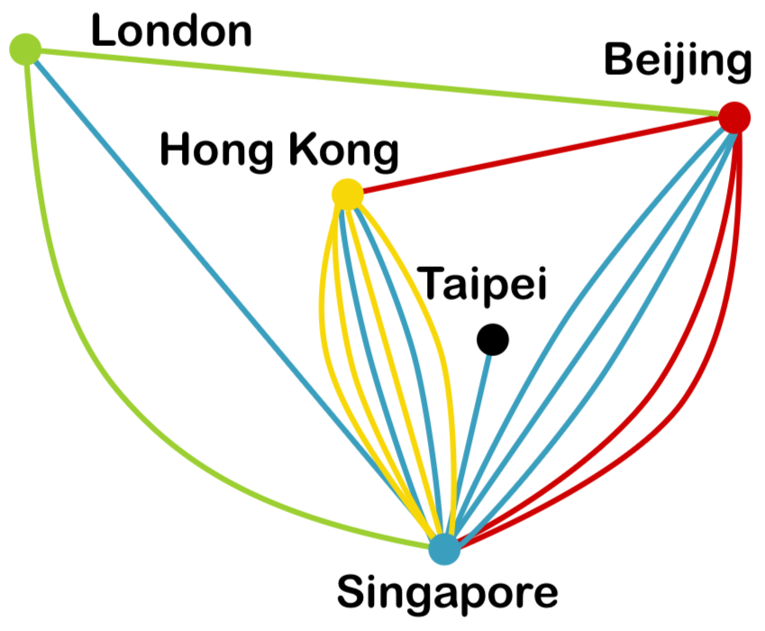
Directed graph
Edges are ordered (have a direction).
Loops and parallel edges are allowed.
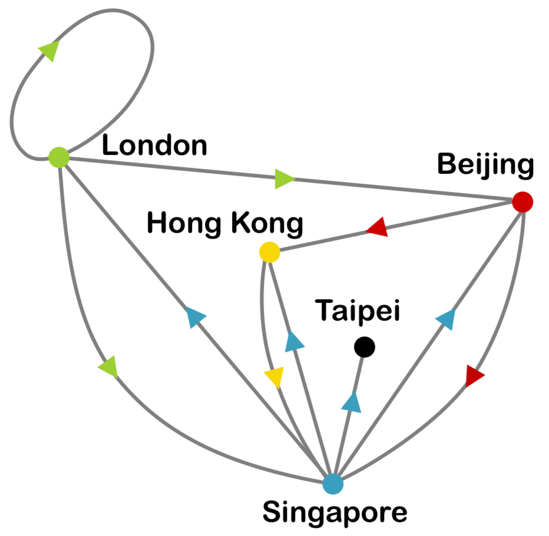
Complete graph
Simple graph + every vertex is adjacent to every other distinct vertex.
Number of vertices = nC2
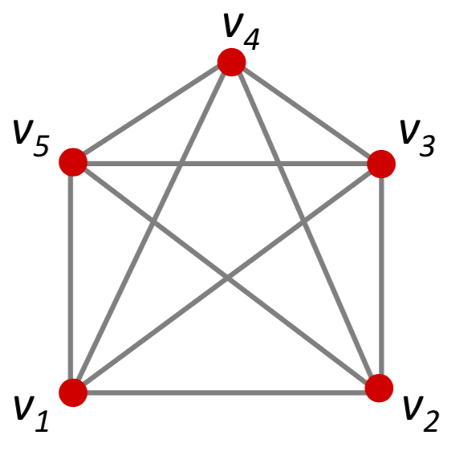
Bipartite graph
Use the 2 colour method to determine if a graph is bipartite
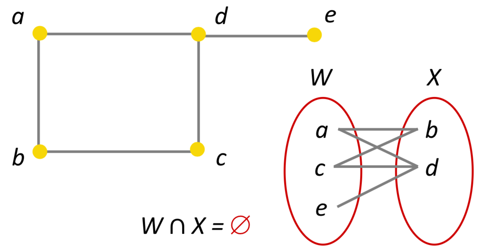
Euler paths/circuits
Euler path - a walk in a graph that visits every edge exactly once.
Euler circuit - a walk in a graph that visits every edge exactly once & starts and ends at the same vertex.
Euler circuits are a subset of Euler paths.
Euler’s Theorem
A graph has an Euler circuit iff
- The graph is connected
- Every vertex has an even degree.
An connected graph has an Euler path if it has either 0 or 2 vertices with odd degrees.
An unconnected graph with all vertices having even degrees may not have an Euler circuit.
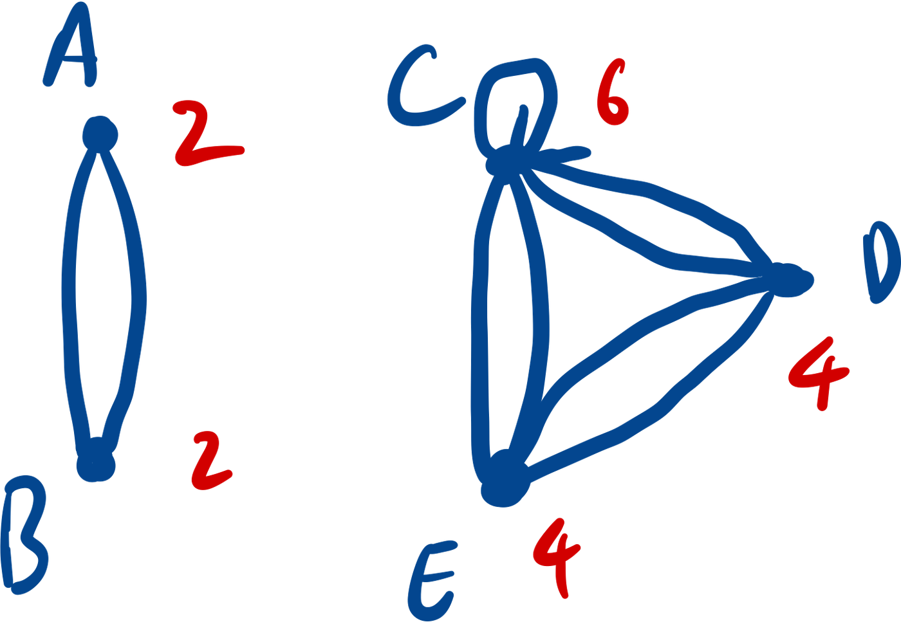
Hamiltonian path/circuit
Hamiltonian path - a walk in a graph that visits every vertex exactly once.
Hamiltonian circuit - a closed walk in a graph that visits every vertex exactly once & starts and ends at the same vertex.
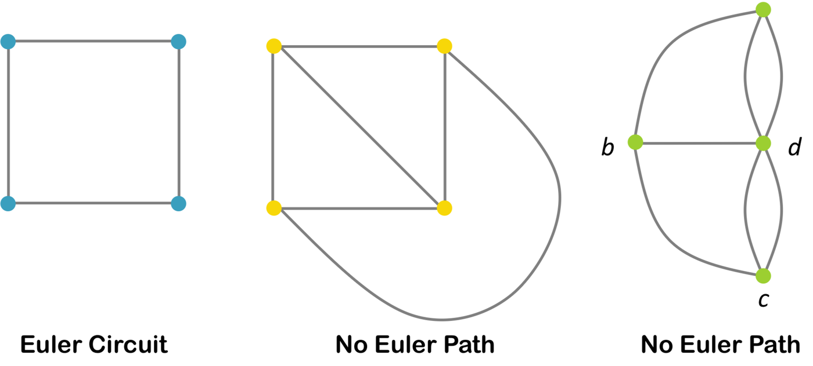
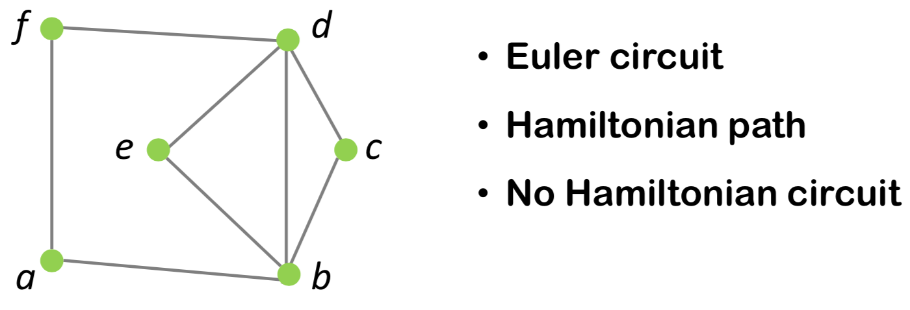
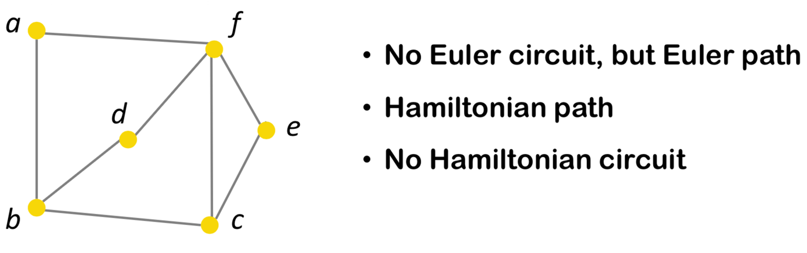
Handshaking theorem
Adjacency matrix
For undirected graph, adjacency matrix is symmetric along the negative diagonal.
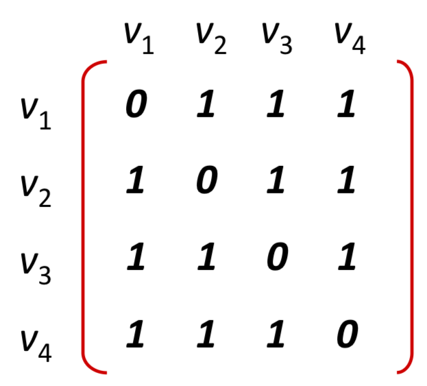
Isomorphic graphs
there are two bijective functions
**i.e. any two vertices v and w are adjacent in G if and only if g(v) and g(w) are adjacent in H.
How to tell if not isomorphic
- Number of edges
- Number of vertices
- total degree
- Maximum degree
- Minimum degree
- Degree sequence
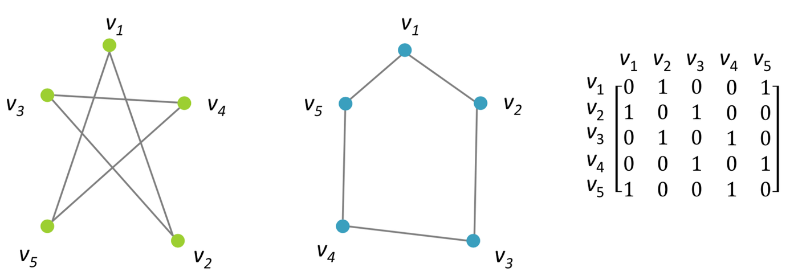